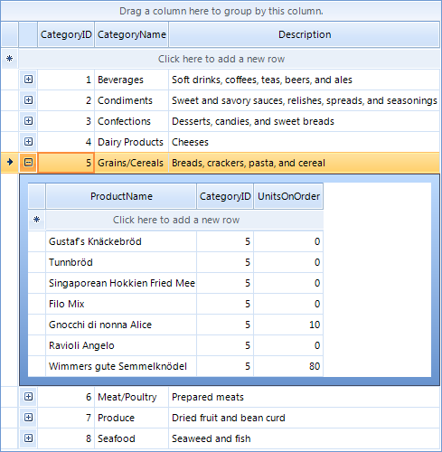
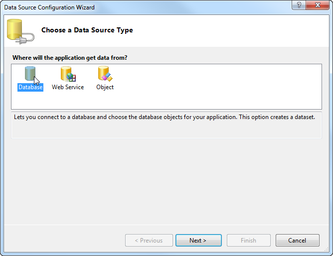
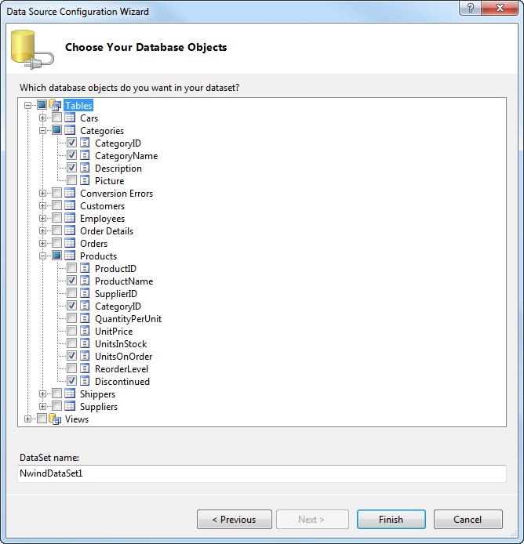
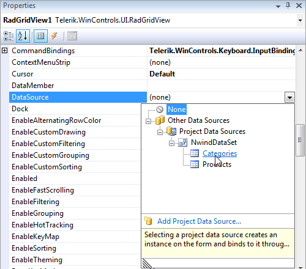
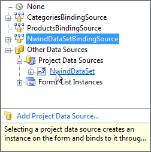

Getting Started
| RELATED VIDEOS |
| [RadGridView for WinForms Webinar](http://tv.telerik.com/winforms/webinar/radgridview-for-winforms-webinar) Lino Tadros from Falalel provides an in-depth overview of Telerik's RadGridView for WinForms (Runtime: 01:45:11) |
The example below demonstrates creating a hierarchical grid presenting two tables
Product Category and Product Information.

Setting up the Form
Create a new Windows Application project.
Drop a RadGridView control on the form.
Set RadGridView Dock property to Fill in the Properties window of Visual Studio.
Connecting to Data
Open the DataSource property drop down in the Properties window of Visual Studio and select Add Project Data Source. This step will open the Data Source Configuration Wizard.
In the Data Source Configuration Wizard, Choose a Data Source Type page, select the Database icon, and click Next.
In the Choose Your Data Connection page of the wizard, click on the New Connection... button. This page displays the Add Connection dialog.
In the Add Connection dialog, click on the Change... button. This will display the Change Data Source dialog.
In the Change Data Source dialog, select Microsoft Access Data Base File from the data source list.
Click OK to close the Change Data Source dialog.
In the Add Connection dialog, click on the Browse... button. This step will display the Select Microsoft Access Database File dialog.
In the Select Microsoft Access Database File dialog, navigate to Telerik UI for WinForms installation directory and locate the Nwind.mdb file within the \Examples\QuickStart\Datasources directory. Select Nwind.mdb and click OK to close the Select Microsoft Access Database File dialog.
Click OK to close Add Connection dialog.
In Choose Your Data Connection page of the wizard, click Next. This step will display a Microsoft Visual Studio dialog that prompts to ask if you want to copy the file to your project. Click Yes to close the dialog.
In Save the Connection String to the Application Configuration File page of the wizard, click the Next button.
In Choose Database Objects page of the dialog, select columns from the Categories table: "CategoryID", "CategoryName" and "Description". Select columns from the Products table: "ProductName", "CategoryID", "UnitsOnOrder" and "Discontinued".
Click the Finish button to close the Data Source Configuration Wizard.
In the Properties window of Visual Studio, open the DataSource property drop down and select Categories from the NwindDataSet data source. This step will create categoriesBindingSource and categoriesTableAdapter controls.
Select the DataSource property drop down a second time and select Products from NwindDataSet data source. This step will create productsBindingSource and productsTableAdapter controls.
Select the DataSource property drop down for the third time and select NwindDataSet. This step will assign the entire dataset to the grid.

Setting Properties
In the Properties window of Visual Studio, set the DataMember property - select Categories from the drop down list. This step will assign categories as a top level table for the grid.
In the Properties window, set AutoGenerateHierarchy to True.
From RadGridView smart tag, select Open Property Builder.
In Property Builder Structure pane, de-select *CategoryID *checkboxes.
Close the Property Builder window.
Press F5 to run the application. Notice that the grid first displays product categories. Each category has an icon that can be clicked to expand that category and show a child template with the corresponding products.